2.8166
PoA (Regime A)
0.8524
Contraction Rate k
0.0051
λ_max (ε=0.01)
41 / 41
Tests Passing
Regime Summary
| Regime | Label | x_Nash | x_SO | PoA | k | Type |
|---|---|---|---|---|---|---|
| A | Calibrated (N=809, κ=8) | 0.0000 | 1.0000 | 2.8166 | 0.8524 | Complements |
| B | Illustrative B (legacy N=186) | 0.4730 | 0.2683 | 1.4208 | 0.0427 | Complements |
| B' | Illustrative B' (legacy N=186) | 0.4343 | 0.2261 | 1.5388 | 0.0427 | Substitutes |
⚠️ Regime A caveat: Coefficients are jointly insignificant (F p=0.755), welfare is convex (B=−8.60), concavity not established (p=0.26), κ=8 is an assumption, and Nash=0 / SO=1 lie outside observed click-appeal range (~0.07–0.66).
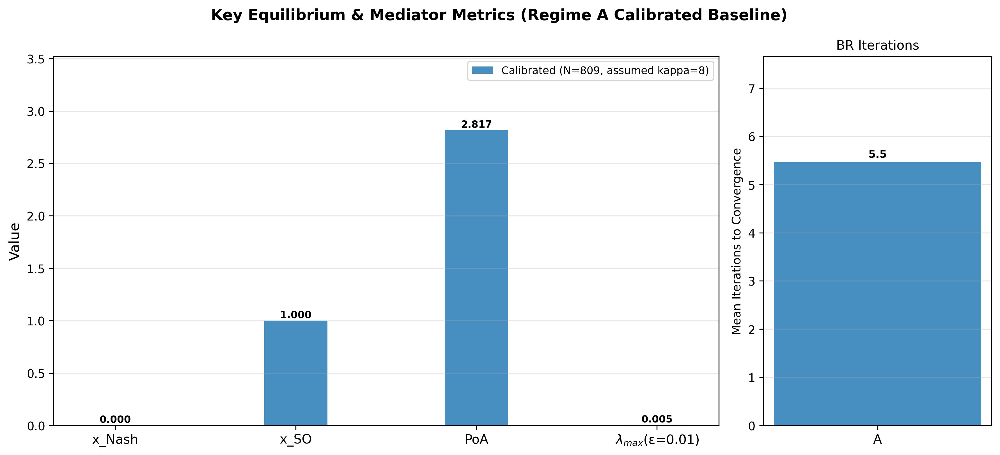
04 — Grouped bar chart: equilibria, PoA, λ_max, iterations across regimes
Experiment 1 & 2 — Best-Response Dynamics
100 random starting profiles, n=38 agents, synchronous BR, max 500 iterations.
| Metric | Regime A | Regime B | Regime B' |
|---|---|---|---|
| Converged (of 100) | 100 ✓ | 100 ✓ | 100 ✓ |
| Mean iterations | 5.5 | 4.8 | 4.9 |
| Mean error to Nash | < 1e-6 | < 1e-6 | < 1e-6 |
| Simulated PoA | 2.8166 | 1.4208 | 1.5388 |
| Theory match | PASS | PASS | PASS |
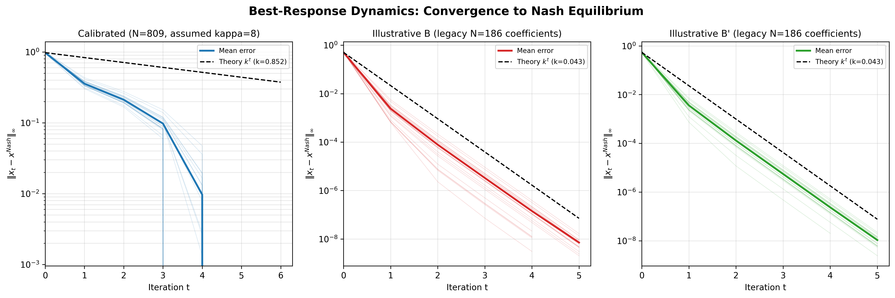
01 — Log-scale ‖xₜ − x_Nash‖∞ vs iteration
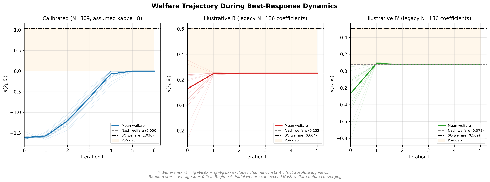
02 — Symmetric welfare π(x̄ₜ, x̄ₜ) vs iteration with PoA gap
RQ1 — Platform Mediator Sweep
| ε | λ_max | R(λ_max) log-view | R_V(λ_max) view | Interpretation |
|---|---|---|---|---|
| 0.001 | 0.0005 | −0.37% | −0.21% | Near-ineffective |
| 0.01 | 0.0051 | −3.68% | −2.06% | Near-ineffective |
| 0.05 | 0.0281 | −19.89% | −11.66% | Negative welfare dip |
| 0.10 | 0.0710 | −47.65% | −29.28% | Substantial welfare loss |
📉 Why negative? In Regime A, E = β₃ = −5.54 < 0 and welfare is convex. Moving from x_Nash=0 toward x_SO=1 initially decreases welfare. R(λ) crosses zero at λ ≈ 0.145. The closed-form R=2λ−λ² only holds when welfare is concave (Regimes B, B').
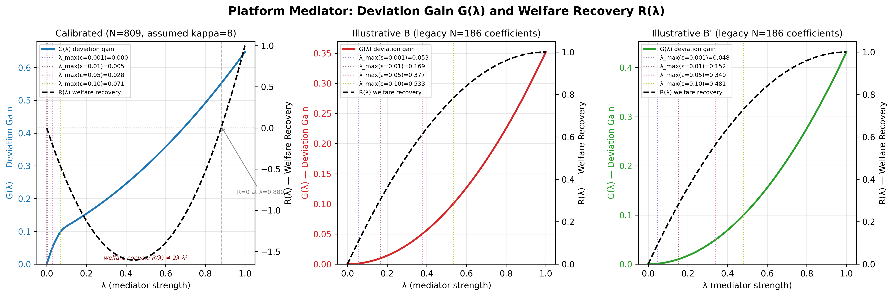
03 — G(λ) deviation gain and R(λ) welfare recovery vs λ. Regime A R-axis goes negative.
RQ2 — Payoff-Based Learning (T=500, low & high starts separate)
| Regime | Init | σ | D_T | Δ_T | Frac Conv | Share ∈ δ | T_δ |
|---|---|---|---|---|---|---|---|
| A | low | 0.05 | 0.0518 | 0.0148 | 1.00 | 97.9% | 5.1 |
| A | high | 0.05 | 0.3437 | 0.2656 | 0.00 | 0.0% | NaN |
| A | low | 1.14 | 0.4533 | 0.1614 | 0.00 | 17.8% | NaN |
| A | high | 1.14 | 0.9617 | 0.7255 | 0.00 | 0.0% | NaN |
| B | low | 0.05 | 0.0955 | 0.0046 | 1.00 | 75.1% | 18.8 |
| B | high | 0.05 | 0.1061 | 0.0062 | 1.00 | 75.9% | 8.4 |
| B | low | 1.14 | 0.4438 | 0.1983 | 0.00 | 10.5% | NaN |
| B | high | 1.14 | 0.4955 | 0.2340 | 0.00 | 6.8% | NaN |
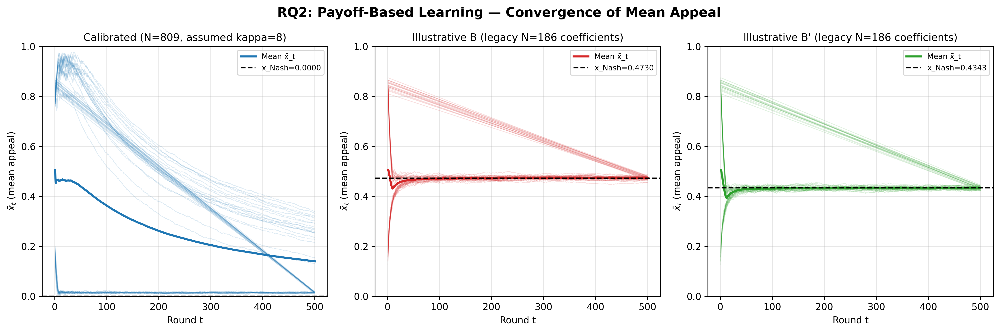
05 — Population mean x̄ₜ vs round t for all regimes
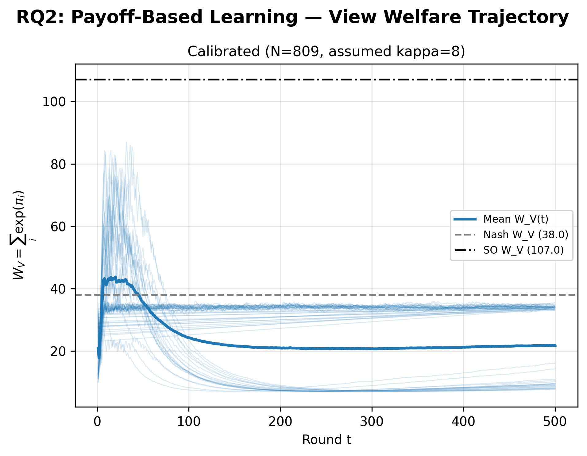
06 — Noise-free view welfare W_V(t) vs round t
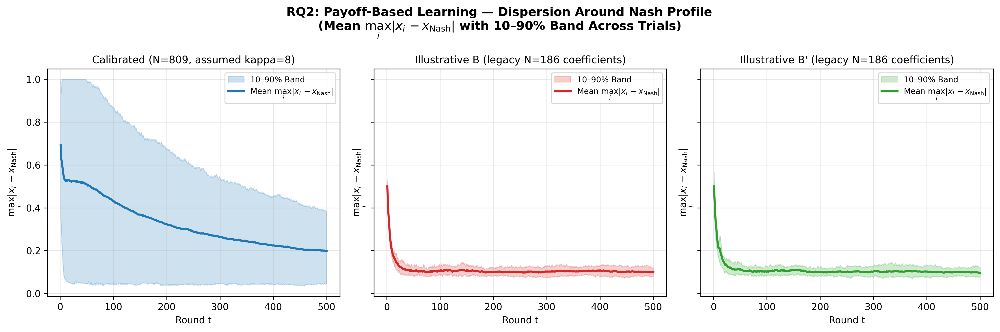
07 — Individual dispersion max_i |x_i − x_Nash| vs round t with 10–90% band
Parameter Sensitivity Sweeps
Noise Sensitivity (σ)
| σ | Regime A (low / high) | Regime B (low / high) | ||||
|---|---|---|---|---|---|---|
| D_T low | D_T high | Conv low | D_T low | D_T high | Conv low | |
| 0.00 | 0.000 | 0.999 | 1.00 | 0.207 | 0.190 | 0.00 |
| 0.05 | 0.051 | 0.344 | 1.00 | 0.096 | 0.112 | 1.00 |
| 0.10 | 0.089 | 0.378 | 1.00 | 0.139 | 0.150 | 1.00 |
| 0.25 | 0.201 | 0.645 | 0.20 | 0.262 | 0.258 | 0.40 |
| 0.50 | 0.298 | 0.860 | 0.00 | 0.388 | 0.396 | 0.00 |
| 1.14 | 0.446 | 0.960 | 0.00 | 0.449 | 0.503 | 0.00 |
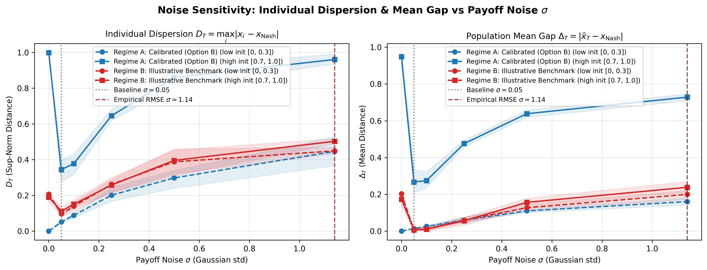
09 — D_T and Δ_T vs σ, Regimes A and B, low & high init
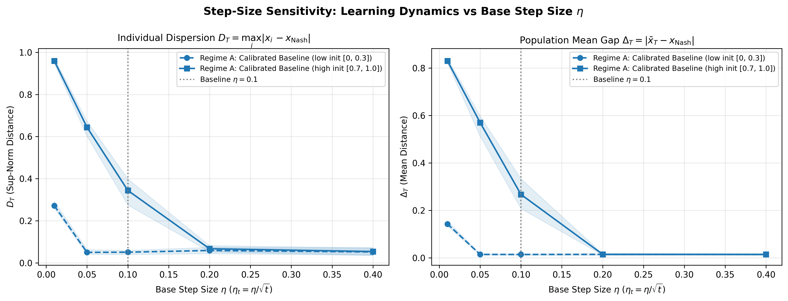
10 — D_T and Δ_T vs η (step size), Regimes A and B
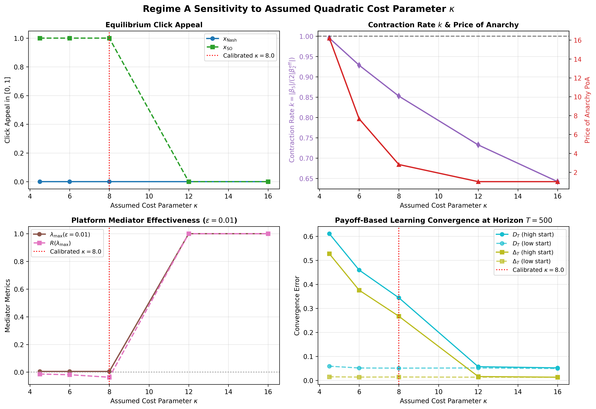
11 — Regime A sensitivity: equilibria, k, PoA, mediator, learning vs κ
17.96%
P(well-posed)
27.32%
P(contraction-valid)
22.95%
P(E < 0)
92.96%
P(β₂ < 0)
Bootstrap Uncertainty (10,000 Draws)
| Metric | Point Est. | Well-Posed Median [95% CI] | Contraction-Valid Median [95% CI] |
|---|---|---|---|
| λ_max(ε=0.01) | 0.0051 | 0.1739 [0.048, 1.000] | 0.1221 [0.002, 1.000] |
| R(λ_max) | −0.037 | 0.286 [0.062, 1.000] | 0.205 [−0.073, 1.000] |
| R_V(λ_max) | −0.021 | 0.248 [0.001, 1.000] | 0.152 [−0.029, 1.000] |
| k | 0.852 | 0.321 [0.016, 0.940] | 0.494 [0.023, 0.975] |
| PoA | 2.817 | 1.467 [1.001, 121.4] | 1.650 [0.029, 17953] |
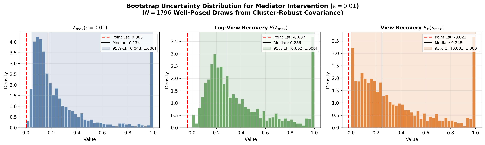
08 — Histograms of λ_max, R, and R_V across well-posed bootstrap draws